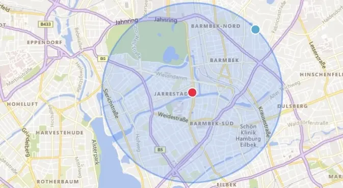

Katharina Köster
Hebamme in Hamburg-Winterhude
Schwangerschaft · Wochenbett · Nachsorge
Empathisch begleiten, individuell stärken, evidenzbasiert handeln – das ist für mich moderne Hebammenkunst. Für eine persönliche, sichere und bestärkende Betreuung.
Über mich
Ich bin Katharina, 1979 geboren, Mutter von 2 Kindern und seit März 2025 Hebamme. Ich betreue freiberuflich Schwangere und Wöchnerinnen in Winterhude und Barmbek. Außerdem arbeite ich im Krankenhaus Winsen im Kreißsaal.
Vor meinem Hebammenstudium habe ich zwölf Jahre lang medizinische Gebrauchsanweisungen geschrieben und dabei viel mit Rettungsdienst und medizinischem Fachpersonal zusammen gearbeitet. Hier entdeckte ich mein wachsendes Interesse an medizinischen Berufen.
Bei der Geburt meiner eigenen Kinder (2012 und 2013) war ich tief beeindruckt von der Rolle der Hebamme. Die Verbindung aus medizinischer Fachkompetenz und einfühlsamer Begleitung in einer so intensiven Lebensphase hat mich seitdem nicht mehr losgelassen. Und so habe ich mich entschieden, beruflich noch einmal ganz neu zu starten und Hebamme zu werden.
Ich bin jeden Tag dankbar, diese Entscheidung getroffen zu haben und diesen Beruf ausüben zu dürfen.
Meine Leistungen
Schwangerschaft
Ich begleite dich einfühlsam und kompetent durch die besondere Zeit der Schwangerschaft. Auf Wunsch übernehme ich alle Vorsorgeuntersuchungen nach den Mutterschaftsrichtlinien – in Abstimmung mit deiner Gynäkolog:in.
Bei Schwangerschaftsbeschwerden bin ich für dich da und unterstütze dich mit fachlichem Rat. Außerdem berate ich dich zu Themen wie Ernährung, Sexualität, körperlichen Veränderungen und zur Vorbereitung auf die Geburt und das Wochenbett.
Wochenbett
Als Hebamme biete ich dir eine umfassende Wochenbettbetreuung und kompetente Nachsorge in der sensiblen Zeit nach der Geburt. Dabei stehen die körperliche Untersuchung von Mutter und Kind sowie die individuelle Beratung zum Stillen und zu allen Fragen rund ums Neugeborene im Mittelpunkt.
In den ersten Tagen komme ich täglich vorbei, danach in Absprache mit Dir alle 2-7 Tage. Diese Betreuung wird von deiner Krankenkasse bis zum Ende des dritten Lebensmonats deines Babys übernommen.
Zusätzlich stehe ich dir bei Themen wie Schlaf, Bindung und Ernährung unterstützend zur Seite.
Kinesiotaping
Kinesiotaping ist eine medikamentenfreie Methode, die bei Rückenschmerzen, Ischias, Nackenverspannungen und Beckenschmerzen hilft. In der Schwangerschaft kann Kinesiotatping Symphysenschmerzen lindern, den Bauch unterstützen, den Lymphfluss fördern und Übelkeit mildern. Im Wochenbett kann die Rückbildung unterstützt, der Milchfluss verbessert, der Wochenfluss gefördert und Brustspannen gelindert werden.
Kinesiotaping wird leider nicht von den Krankenkassen übernommen, sondern Dir privat in Rechnung gestellt. Die Preise liegen je nach Anwendungsstelle und Materialverbrauch zwischen 10€- 25€.
Kontakt
Betreuungsgebiet
Stadtteile Winterhude, Barmbek & Uhlenhorst in Hamburg
Telefon
Vertretung
